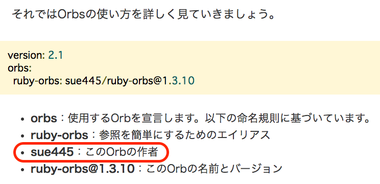
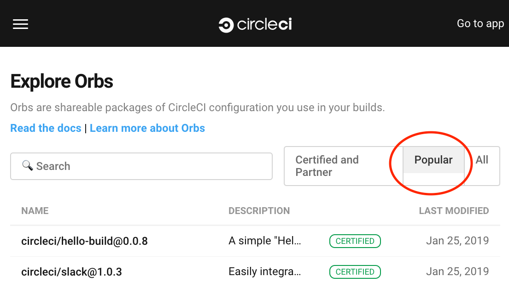
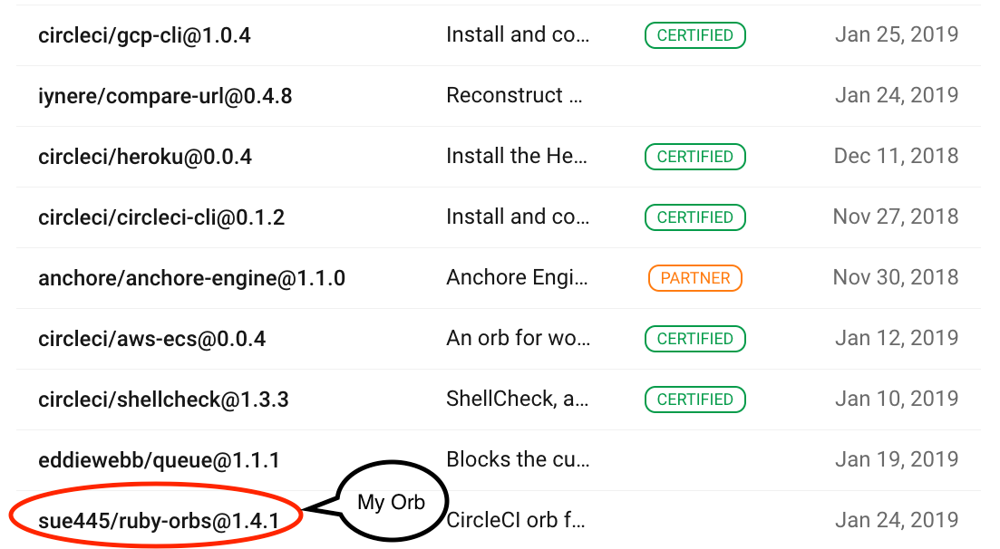
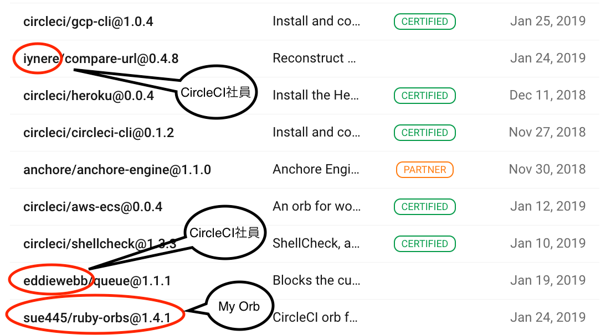
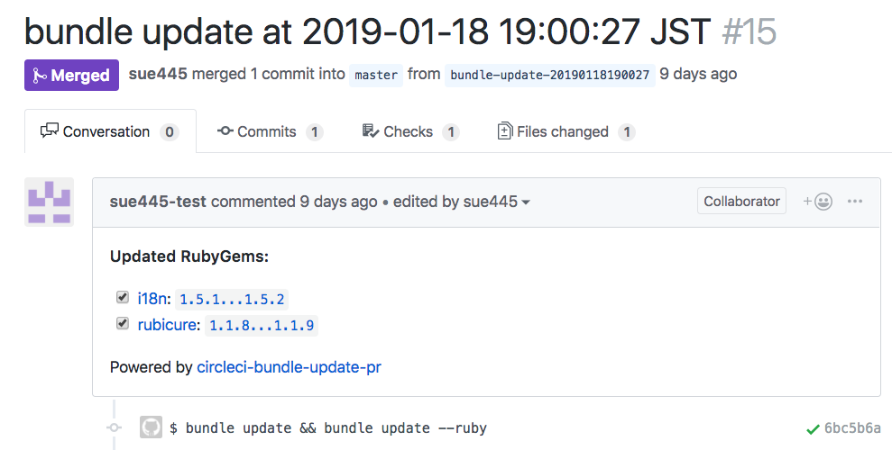

自己紹介 
- Go Sueyoshi a.k.a @sue445
- ピクシブ所属
- 自称CIマニアでCircleCI, Wercker, Travis CI, GitLab CI, Jenkins辺りは3〜4年くらい利用してる
sue445
2019/01/30 第1回CircleCI ユーザーコミュニティミートアップ
https://codezine.jp/article/detail/11306?p=4




.circleci/config.yml のリファクタリングと処理の共通化が可能になる.circleci/config.yml をモジュール化する仕組み
restore_cache -> 何らかのインストール処理 -> save_cache が定番bundle install するstep」を書いているjobs:
rspec:
docker:
- image: circleci/ruby
steps:
- checkout
# 毎回フルでbundle installするとビルドが遅くなるのでキャッシュがあればとってくる
- restore_cache:
keys:
- v1-bundle-{{ checksum "Gemfile.lock" }}
- v1-bundle
- run:
name: bundle install
command: |
bundle install --jobs=4 --retry=3 --path vendor/bundle
# 古いgemが残ってるとキャッシュが肥大化してビルドが遅くなるので消す
bundle clean
# Gemfile.lockに書かれてるbundlerのバージョンとCIのdockerイメージに入ってる
# bundlerのバージョンに差異があるとGemfile.lockが更新されてchecksumが一致しなくなるので元に戻す
gem install restore_bundled_with --no-document
restore-bundled-with
- save_cache:
key: v1-bundle-{{ checksum "Gemfile.lock" }}
paths:
- ~/app/vendor/bundle
# ↑↑↑↑↑↑ここから上は毎回同じ↑↑↑↑↑
- run: bundle exec rake test
bundle install の利用頻度は多いruby-orbs/bundle-install に集約されているjobs:
rspec:
docker:
- image: circleci/ruby
steps:
- checkout
- ruby-orbs/bundle-install
- run: bundle exec rspec
bundle update してPRを作るgem）をorb化したもの
bundle update = 自分のアプリで使ってるライブラリを全部最新にすること
https://github.com/masutaka/circleci-bundle-update-pr/blob/v1.14.1/README.md#configure-circleyml
version: 2
jobs:
build:
# snip
continuous_bundle_update:
docker:
- image: ruby:2.4.2-alpine
working_directory: /work
steps:
- run:
name: Install System Dependencies
command: |
# See also https://circleci.com/docs/2.0/custom-images/#adding-required-and-custom-tools-or-files
apk add --update --no-cache git openssh-client tar gzip ca-certificates \
tzdata
gem install -N bundler
- run:
name: Set timezone to Asia/Tokyo
command: cp /usr/share/zoneinfo/Asia/Tokyo /etc/localtime
- checkout
- restore_cache:
name: Restore bundler cache
keys:
- gems-{{ .Environment.COMMON_CACHE_KEY }}-{{ checksum "Gemfile.lock" }}
- gems-{{ .Environment.COMMON_CACHE_KEY }}-
- run:
name: Setup requirements for continuous bundle update
command: gem install -N circleci-bundle-update-pr
- deploy:
name: Continuous bundle update
command: circleci-bundle-update-pr <username> <email>
workflows:
version: 2
build:
jobs:
- build:
# snip
nightly:
triggers:
- schedule:
cron: "00 10 * * 5"
filters:
branches:
only: master
jobs:
- continuous_bundle_update
jobs が完全に不要で workflows だけになった
version: 2.1
workflows:
version: 2
nightly:
triggers:
- schedule:
cron: "00 10 * * 5"
filters:
branches:
only: master
jobs:
- ruby-orbs/bundle-update-pr:
image: "circleci/ruby:2.5.3"
pre-bundle-update-pr:
- run:
name: "Set timezone to Asia/Tokyo"
command: "sudo cp /usr/share/zoneinfo/Asia/Tokyo /etc/localtime"
- ruby-orbs/bundle-install
Orbsという外部のymlファイルを自分の.circleci/config.ymlにincludeしてコンパイルして、インライン展開した新しい .circleci/config,yml を生成する
version: 2.1
orbs:
# これがインライン展開される
hello: namespace/orb@dev:0.0.1
workflows:
hello-workflow:
jobs:
- hello/hello-build
.circleci/config.ymlをコンパイルこれが実際にCircleCIのジョブとして実行される
version: 2
jobs:
# namespace/orbに定義されているhello/hello-buildがインライン展開された
hello/hello-build:
docker:
- image: circleci/buildpack-deps:curl-browsers
steps:
- run:
command: echo "Hello, build!"
workflows:
hello-workflow:
jobs:
- hello/hello-build
version: 2
c.f. 公式ドキュメント
config.yml のシンタックスチェックconfig.yml をコンパイルしてOrbsをインライン化するテストrestore_cache -> 言語ごとのインストール処理（Rubyなら bundle install） -> save_cache 」をひとまとめにする.circleci/config.yml のリファクタリングと処理の共通化が可能になる例
- when:
- condition: << parameters.count == 3 >>
- steps:
- 〜
- when:
- condition: << parameters.value == 'hoge' >>
- steps:
- 〜
!) がほしいboolean型のparameterが false の時に実行されるブロックを書きたいができない
- run: |
# こっちは書ける
<<# parameters.with_gemfile_lock >>
with_gemfile_lock="true"
<</ parameters.with_gemfile_lock >>
# こっちはエラー
<<# !parameters.with_gemfile_lock >>
with_gemfile_lock="false"
<</ !parameters.with_gemfile_lock >>
- run: |
with_gemfile_lock="false"
<<# parameters.with_gemfile_lock >>
with_gemfile_lock="true"
<</ parameters.with_gemfile_lock >>
{kind=link}